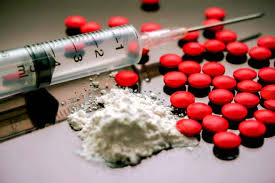

ประวัติของยาเสพติด
ยาเสพติดมีประวัติความเป็นมายาวนานควบคู่กับมนุษยชาติ โดยเริ่มต้นจากการใช้พืชธรรมชาติที่มีฤทธิ์ต่อจิตประสาท เช่น ฝิ่น กัญชา และใบโคคา ซึ่งถูกนำมาใช้ในด้านการแพทย์ พิธีกรรมทางศาสนา หรือเพื่อความผ่อนคลายทางจิตใจมานับพันปี ในสมัยโบราณ ชาวจีนใช้ฝิ่นในการบรรเทาอาการปวด ส่วนชาวอินเดียและตะวันออกกลางใช้กัญชาในพิธีกรรม และชาวพื้นเมืองในทวีปอเมริกาใต้เคี้ยวใบโคคาเพื่อเพิ่มพลังงานและลดความเมื่อยล้า
เมื่อเข้าสู่ยุควิทยาศาสตร์และอุตสาหกรรม ในช่วงศตวรรษที่ 19 มนุษย์เริ่มสกัดสารออกฤทธิ์จากพืช เช่น มอร์ฟีนจากฝิ่น และโคเคนจากใบโคคา เพื่อนำมาใช้ในทางการแพทย์ มอร์ฟีนถูกนำมาใช้บรรเทาอาการเจ็บปวดอย่างแพร่หลาย โดยเฉพาะในช่วงสงครามโลก แต่ต่อมากลับพบว่ามีฤทธิ์เสพติดสูง และทำให้ผู้ใช้เกิดการพึ่งพาทางร่างกายและจิตใจ บริษัท Bayer ของเยอรมนีได้ผลิตเฮโรอีนในปี ค.ศ. 1898 หวังใช้เป็นยารักษาอาการติดมอร์ฟีน แต่พบว่าเฮโรอีนมีฤทธิ์รุนแรงยิ่งกว่าเดิม
ปัญหาการติดยาเริ่มขยายตัวอย่างรวดเร็ว ทำให้รัฐบาลในหลายประเทศต้องเริ่มออกกฎหมายควบคุม เช่น สหรัฐอเมริกาออกกฎหมาย Harrison Narcotics Tax Act ในปี ค.ศ. 1914 เพื่อควบคุมการใช้และจัดเก็บภาษีสารเสพติด ในระดับนานาชาติ องค์การสหประชาชาติก็เริ่มเข้ามามีบทบาทในการกำหนดนโยบายควบคุมยาเสพติดทั่วโลก โดยจัดทำอนุสัญญาหลายฉบับเพื่อให้ประเทศสมาชิกใช้เป็นแนวทาง
ในภูมิภาคเอเชียตะวันออกเฉียงใต้ พื้นที่ที่รู้จักกันในชื่อ “สามเหลี่ยมทองคำ” ซึ่งครอบคลุมบางส่วนของไทย ลาว และพม่า กลายเป็นแหล่งผลิตฝิ่นที่สำคัญของโลก และต่อมาพัฒนาไปสู่การผลิตเฮโรอีนและสารเสพติดชนิดอื่น ๆ ยุคหลังมียาเสพติดสังเคราะห์เพิ่มขึ้น เช่น ยาบ้าและยาไอซ์ ซึ่งมีฤทธิ์กระตุ้นประสาทและแพร่กระจายได้ง่าย ทำให้ปัญหายาเสพติดทวีความรุนแรงมากขึ้น
ปัจจุบัน หลายประเทศเริ่มเปลี่ยนแนวทางจากการใช้มาตรการลงโทษอย่างเดียว มาเป็นการบำบัดฟื้นฟูผู้ติดยา และให้ความรู้เพื่อป้องกันการเสพติดตั้งแต่ต้น สังคมเริ่มตระหนักว่ายาเสพติดไม่ใช่แค่ปัญหาทางกฎหมาย แต่ยังเป็นปัญหาทางสาธารณสุขและสังคมที่ต้องแก้ไขด้วยความเข้าใจและความร่วมมือในหลายมิติ
ยาเสพติดที่อันตรายที่สุด
- เฮโรอีน
- โคเคน
- บาร์บิวทัวเรท
- เมทาโดน
- แอลกอฮอล์
- เคตามีน
